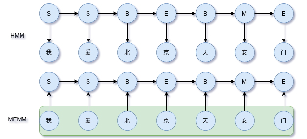

概率图模型系列（4）：MEMM
最大熵马尔可夫模型（MEMM）是使用最大熵原理作为学习准则的马尔科夫模型。
HMM的不足
HMM两个基本假设：
- 观察值之间严格独立，观察独立性假设
- 状态转移过程中，当前状态仅依赖于前一个状态（一阶马尔科夫模型）
这两个假设换成中文分词语境来说就是，在隐状态集为{B,M,E,S}下，当前标注的取值取决于前一时间步的标注；而当前时刻的观察值（中文字）只由当前时间步的标注决定。显然，这样的约束导致模型忽视上下文特征表达能力不够。
MEMM
HMM的缺点是解码时不考虑上下文特征，在考虑输出上下文特征的任务中，表现并不是最好。为解决这个问题，引入最大熵隐马模型（MEMM），它考虑相邻位置状态的依赖关系，同时去掉第一个基本假设，即观察独立性假设，并直接通过判别模型建模，

其中$y(y_1|y_0, \boldsymbol{x})=p(y_1|\boldsymbol{x})$。主要到$P(y_{i}|y_{i-1},\boldsymbol{x})$，MEMM在考虑标签$y_i$与$y_{y-1}$的约束外，还考虑整个上下文$\boldsymbol{x}$。
对于$P(y_{i}|y_{i-1},\boldsymbol{x})$，根据最大熵学习准则有，
这里$g(y_{k-1},y_k)$表示相邻标签约束的分值，所有可能的组合构成一个$m\times m$的状态矩阵，$m$为状态数量。$f(y_k;\boldsymbol{x})$表示上下文$\boldsymbol{x}$下输出为$y_k$的分值。分母需要枚举所有可能的状态转移。
直观来看，MEMM就是对每个时间步单独归一化，于是在整个序列上，MEMM可以表示为（这里把边界也纳入到一般式内），
这里$g(y_0, y_1) = 0$，以保证边界一致。可以看到，MEMM是每个时间步对状态进行归一化。这种归一化称为称为局部归一化，因为它不是面向全序列，这也给MEMM带来一定的问题。
局部归一化的问题
从模型上看，尽管MEMM考虑整个观察序列，但是存在标注偏置（label-bias）问题。导致这个问题的原因是局部归一化，隐状态（标注）倾向于转移到后续转移状态更少的状态上，以此提高整体的后验概率。再来看看MEMM对每个时间步的建模，
MEMM在训练的时候，对$y_k$的预测是假定$y_{k-1}$已知，因此，为对$P(y_k|\boldsymbol{x},y_{k-1})$建模，模型只需要优化$g(y_{k-1},y_k)$，也就是直接调整状态转移矩阵，相当于走了捷径。模型在训练阶段“走捷径”导致$f(y_k;\boldsymbol{x})$无法很好地优化。而在预测阶段，$y_{k-1}$的真实标签未知，因为它终究是上一步的预测，这导致$g(y_{k-1},y_k)$的计算不准确，而$f(y_k;\boldsymbol{x})$又没有优化好，于是为提高置信度，模型倾向于转移到后续转移状态更少的状态上。
解决方法是在全局上进行归一化。
HMM .vs. MEMM
MEMM依旧是对序列建模，即$P(y_1,y_2,\dots,y_n|\boldsymbol{x})$，考虑概率中的乘法定理有，
和HMM一致，引入马尔可夫假设，有
由于MEMM存在局部归一化问题，导致其倾向于选择状态转移更少的状态，引发标记偏置问题。两个模型对比示意图，

主要差别：
- HMM是生成模型，MEMM是判别模型
- HMM有观察独立假设，MEMM考虑上下文对标签的影响
总结
本文简单推导MEMM的原理，并指出它局部归一化导致的标注偏置（label-bias）问题，最后对比其与HMM的差异。
参考
[1]《统计自然语言处理》
转载请包括本文地址：https://allenwind.github.io/blog/7694
更多文章请参考：https://allenwind.github.io/blog/archives/